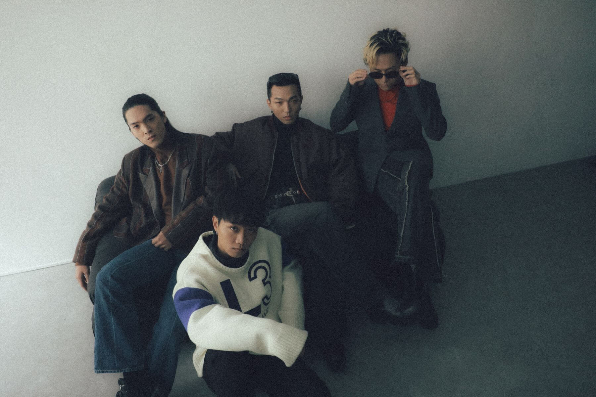

關於我們
傻子與白痴，音樂中有溫暖也有犀利，擁抱聽眾的每一份情感。

台灣獨立樂團的代表之一。
傻子與白痴的音樂風格多樣，歌詞貼近生活，讓人能在旋律中找到共鳴。
- 成立時間: 2015年
- 官方網站: www.idiotsandidiots.com
- 音樂平台: Spotify、YouTube、Apple Music
- 來自城市: 台北，台灣
- 成員人數: 4位
- 專輯數量: 5
- 主要音樂風格: 獨立搖滾
- 目前活動: 活躍中
傻子與白痴的作品經常探討愛情、生活與自我成長，深受年輕族群的喜愛。他們的現場表演充滿感染力，是不可錯過的音樂體驗。
我們的音樂特點
傻子與白痴樂團以細膩的情感表達與多元音樂風格著稱。
詞曲創作 100%
現場演出感染力 95%
多元音樂風格 90%
團隊默契 85%
歌詞深度與情感 95%
錄音與製作技術 90%
樂團經歷
傻子與白痴樂團的音樂旅程與重要時刻。
樂團簡介
傻子與白痴樂團
融合多元音樂風格，專注於細膩情感的音樂表達，深受聽眾喜愛的台灣獨立樂團。
- 所在地：台北市，台灣
- 聯絡電話：+886 987 654 321
- Email：info@foolandidiotband.com
音樂作品
專輯《夜長夢少》
2019 年發行
該專輯結合了搖滾、流行與電子音樂，展現樂團獨特的音樂魅力。
收錄多首深入人心的歌曲，諸如《視線所及只剩生活》、《夜長夢少》等，成功吸引大量粉絲。
EP《Year Of Fate》
2021 年發行
以歐美風為主題。
歌曲如《OY》、《永遠的夏天》深受年輕一代喜愛，成為樂團成名之作。
重要演出經歷
大型音樂節演出
2019 年 - 至今
參加了眾多知名音樂節，包括「春浪音樂節」、「簡單生活節」等。
- 在春浪音樂節中演出，獲得一致好評，吸引大批粉絲現場支持。
- 於簡單生活節主舞台演出，成功將樂團魅力傳遞給更多聽眾。
- 不斷突破自我，在現場演出中融入創新元素。
巡迴演唱會
2021 年
以專輯《日常劇場》為主題的全台巡迴演唱會。
- 巡演涵蓋全台各大城市，包括台北、高雄、台中等地。
- 場場爆滿，充分展現樂團的音樂實力與粉絲號召力。
- 巡演中與粉絲的互動，進一步拉近彼此距離。
樂團服務
探索傻子與白痴樂團提供的多元音樂服務，讓您的活動更具魅力與音樂性。
音樂作品集
傻子與白痴樂團的精彩作品，展現我們對音樂創作的熱情與專業。


樂迷推薦
來自樂迷的真心評價，傻子與白痴帶來最純粹的音樂力量！
「傻子與白痴的音樂讓我感受到無限的力量與希望，真心推薦給所有音樂愛好者！」

林佳佳
忠實樂迷
「每首歌曲都充滿能量，現場演出更是震撼人心！」

陳小明
音樂愛好者
聯繫我們
如有任何問題或合作邀約，歡迎隨時與我們聯繫！
地址
台北市中山區某某路 108 號
電話
+886 1234 5678
電子郵件
info@example.com